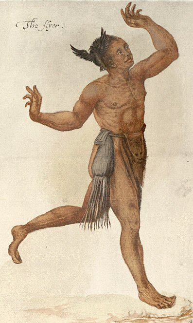

Saturday, March the 3rd, 2012
back to: title, date or indexes
The estimable Wartime Housewife has a rant about the latest stupidity regarding tobacco sales, so I don't have to. Instead, in a no doubt doomed attempt to redress the balance, here is a splendid image of a smoker unburdened by modern restrictions. John White's “The Flyer” (1587) shows an Algonquian shaman prancing around, with his tobacco in a pouch slung around his waist and, most importantly, a small black bird tied to his head. I think perhaps this is the correct attitude to adopt.
